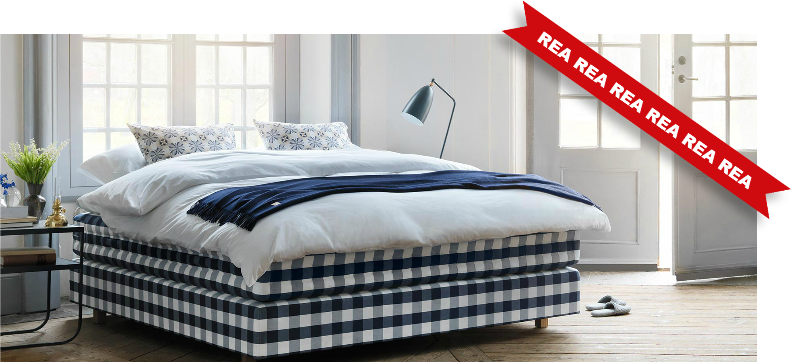

Tempur
Sammetsklädd från topp till tå. Från den quiltade huvudgaveln med tygklädda knappar till den följsamma resårmadrassen som får varje muskel att slappna av. En ren njutning för både kropp och själ.
Sammetsklädd från topp till tå. Från den quiltade huvudgaveln med tygklädda knappar till den följsamma resårmadrassen som får varje muskel att slappna av. En ren njutning för både kropp och själ.